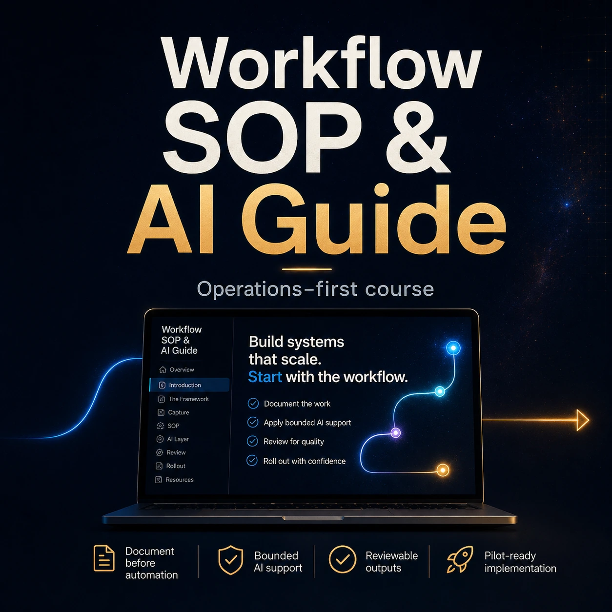

Document the process
Turn loose workflow knowledge into clear steps, roles, and operating notes.
A practical guide for learning how to document workflows, create SOPs, add review checkpoints, and structure AI-supported implementation without making the process messy.

Turn loose workflow knowledge into clear steps, roles, and operating notes.
Build review points so AI-supported work still has human control and quality checks.
Structure workflows so AI support is bounded, useful, and easier to improve.
Use the guide to turn repeatable work into SOPs, checkpoints, and AI-ready systems.